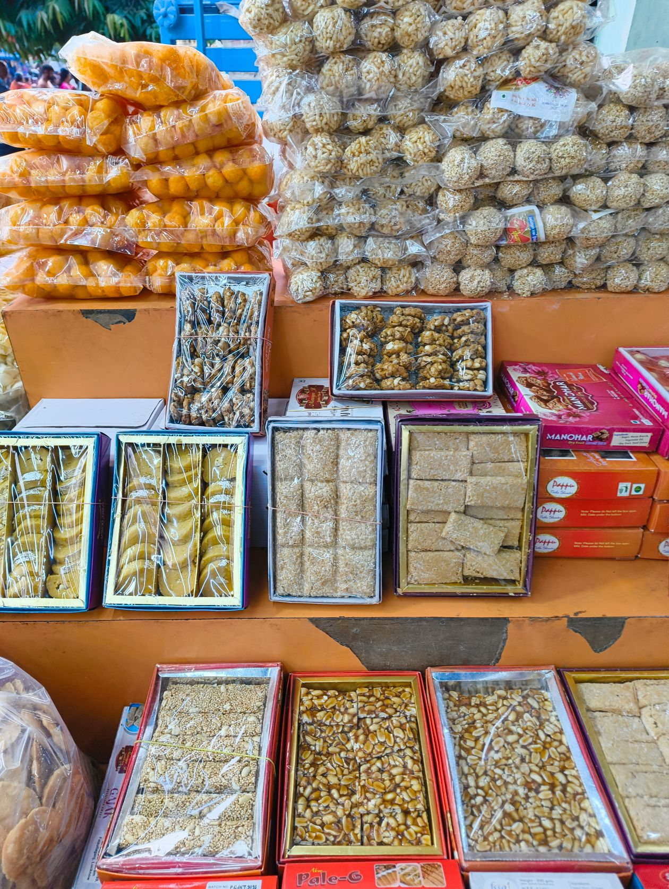
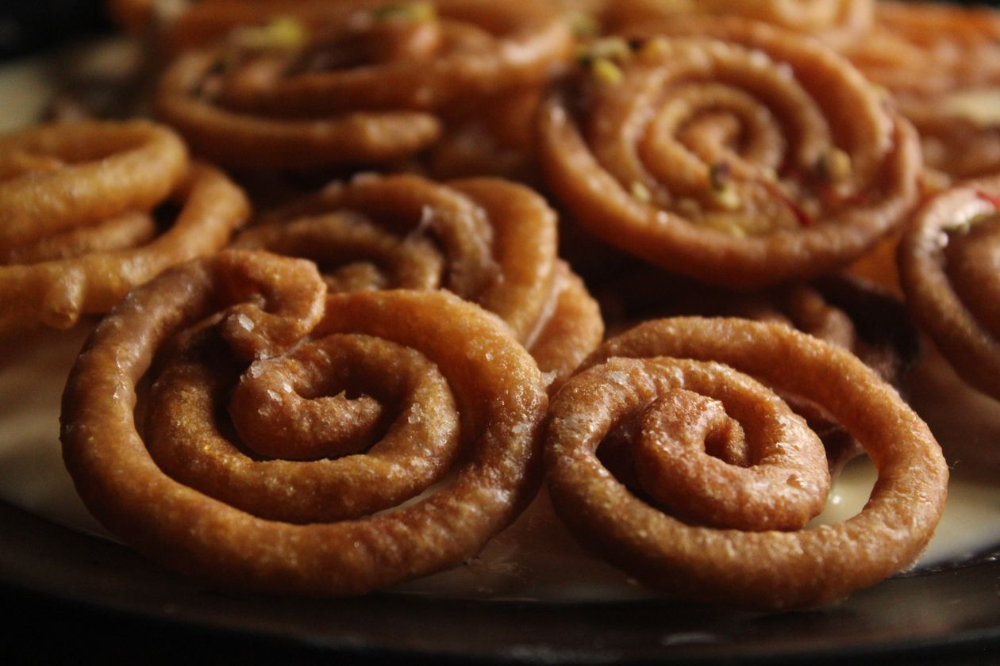

Every order in this book was planned backwards from the day it would be eaten. Three of them stand for the rest — a shipment that had to survive the train, a wedding that ran three days, and a jalebi that is never allowed to sit.

Market trays at full stretch in the festival weeks. What a tray holds at 8 a.m. is a promise about 8 p.m.
Order 1
Three hundred boxes that had to survive the train
Diwali 2025 · shipped
The ask
A firm in Bhopal wanted 300 gift boxes sent to its people in Bhopal, Delhi, Mumbai and Pune — two to three days in transit, opened any time in the week before Diwali. Their first list included malai barfi.
What I did
Only sweets keeping twelve days or more were allowed into a shipped box: kaju katli, besan ladoo, mysore pak. The barfi was refused for shipping in writing, with the dates shown — and 20 kg of it went by car to the Bhopal office the same morning instead, where it was eaten within its four days. Every box was packed at exactly 1 kg and weighed in front of their driver.
The outcome
Three hundred boxes, four cities, zero spoilage complaints. The firm booked Diwali 2026 before Diwali 2025 was over — and this time their first list had no barfi on it.
300gift boxes shipped
312 kgof sweets, weighed box by box
12 daysminimum keeping life allowed in a shipped box
0milk sweets shipped
“He refused to put barfi in the boxes. Refused — politely, with the dates written out. Three hundred boxes reached four cities and not one complaint came back. We have stopped arguing with him.”
Farah Sheikh — office manager, the firm that ordered the 300 boxes
Order 2
A wedding in Ujjain — forty kilos, five trays
Wedding season 2026 · Ujjain
The ask
A family marrying in Ujjain wanted 40 kg of mithai across five sweets, served over three days of functions — and nothing stale by the third day, when the whole town would be eating it.
What I did
The order was built backwards from the wedding day. Besan ladoo and kaju katli were made the week before, mysore pak on the first day, motichoor on the second — and the malai barfi was cut at 6 a.m. on the wedding morning and driven to Ujjain still cool from the fridge.
The outcome
The last tray emptied at the reception. The family sent the empty trays back with the driver, and a photograph of the counter they had set up — my trays, their brass plates.
40 kgacross five sweets
3 daysof functions served
6 a.m.when the barfi was cut, wedding morning
5making days, scheduled backwards
“By the third day the ladoos were still soft. Guests kept asking which shop they came from — in Ujjain, with its own famous counters, that is not a small thing.”
Sunita Joglekar — the bride's mother, Ujjain wedding order
Order 3
Jalebi for the Sarafa night market
Winter 2025–26 · standing order
The ask
The winter night market wanted a jalebi counter with one condition: the jalebi must never sit. Twelve kilos every Saturday evening, November to February, sold to people standing in the cold.
What I did
The batter ferments every Friday night. On Saturday the karahi runs in four batches of 3 kg, timed to the market's footfall — and no batch is sold more than twenty minutes after it leaves the oil. When a batch runs out, the queue waits for the next one. It always waits.
The outcome
Sixteen Saturdays. The last batch of the season sold out at 11:40 p.m. — and the stall has been rebooked for this winter before the weather turned.
12 kgevery Saturday
4 batchesof 3 kg, timed to the crowd
20 minlongest any jalebi waited
16Saturdays, none left over

Jalebi inside its twenty minutes. Past that, it is a photograph of a sweet, not a sweet.
The standing counter
The same six trays, the same prices, all year. Wedding and bulk orders are weighed off this table — nothing is quoted from memory.
Sweet
Price
Keeps
Goes in a shipped box?
Kaju Katli
₹1,150 / kg
15 days
Yes — the first choice
Motichoor Ladoo
₹520 / kg
7 days
Only within the state
Besan Ladoo
₹480 / kg
21 days
Yes — the traveller
Malai Barfi
₹640 / kg
4 days, fridge
No. Never. By car, same day, or not at all
Mysore Pak
₹560 / kg
12 days
Yes, if the tin stays shut
Jalebi
₹400 / kg
The same day
It travels across a room, not a city
Bulk and wedding orders: the table above is the whole price shape — per kilo, by sweet, plus ₹60 per 1 kg gift box when boxes are wanted. Tell me the date and I will send the making schedule with the estimate.